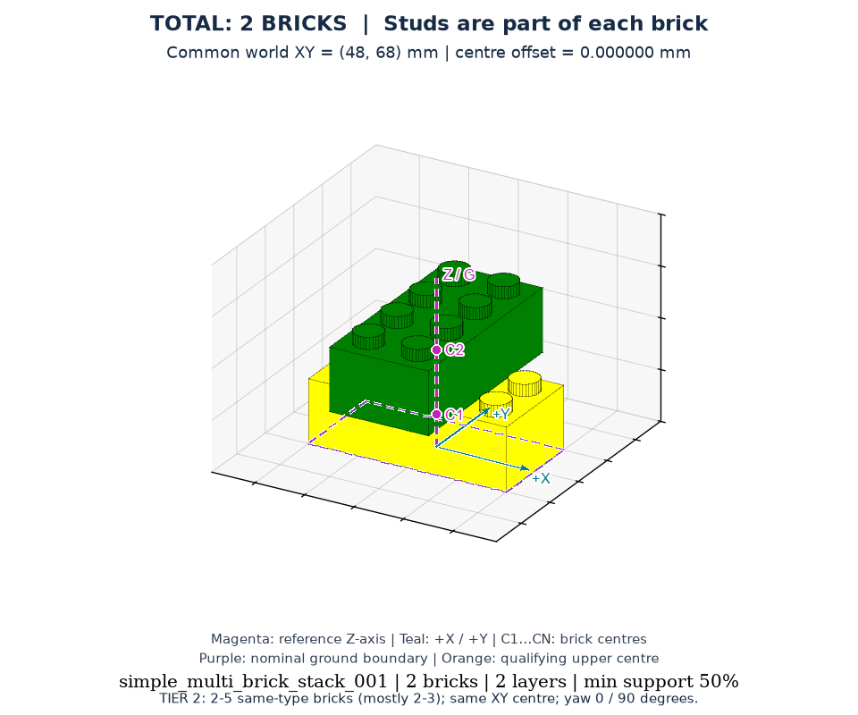
simple_multi_brick_stack_001
2 块 · seed 1000 · 2 层
四个 Tier 的主示例统一使用 target.png：论文风格固定方位角 -60°、仰角 25°。侧视、分层和中心检查仅作为单独的辅助视图，不替代主示例。
2–5 块（85% 为 2–3 块）同砖型，每层一块、所有 XY 中心完全一致，朝向仅 0°/90°。长砖交叉时砖体可以伸出底砖；判断重点是中心一致。 所有图片从当前 YAML 渲染；不同视图展示同一任务。任务本体在 versions/latest/tasks/simple_multi_brick_stack/。采用论文风格，保留原始积木位置、朝向、类型、颜色。
统一图例：洋红 Z 轴 / 俯视十字：底层包络中点 G 的竖直参考轴；紫色虚线：底层整体边界；C1…CN：各砖 XY 中心（3D/侧视中标在砖体半高处）；橙点：Tier 4 满足边界规则的上层中心；青色 X/Y：世界坐标正方向。G 不是重心，也不是每块砖必须达到的位置。初始散件图以料盘中心 P 为参考，不要求散件中心重合。隐藏中心也以检查标注显示。
底层整体边界 = 所有底层砖的名义底面矩形围成的、与世界 X/Y 轴平行的最小外接矩形；不是单块砖的边界，也不代表空隙处有真实支撑。
先数 2–5 块（以 2–3 块为主），再看每层 C 点是否都位于 G。共同中心图中，长砖轮廓只能平行重合或相差 90°；不能平移。

2 块 · seed 1000 · 2 层
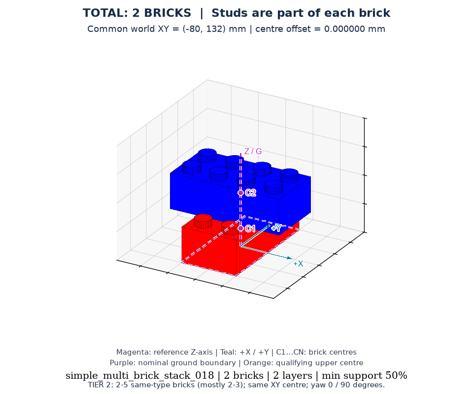
2 块 · seed 1017 · 2 层
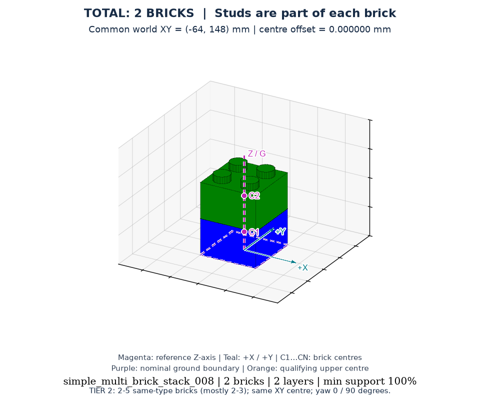
2 块 · seed 1007 · 2 层
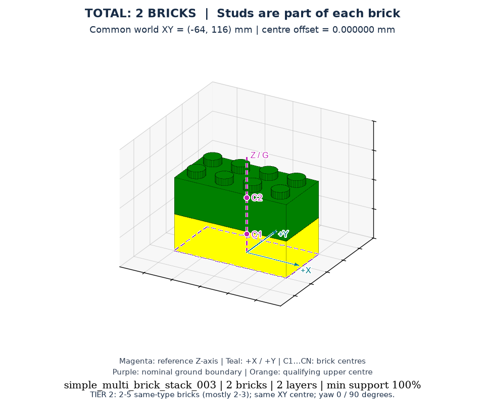
2 块 · seed 1002 · 2 层
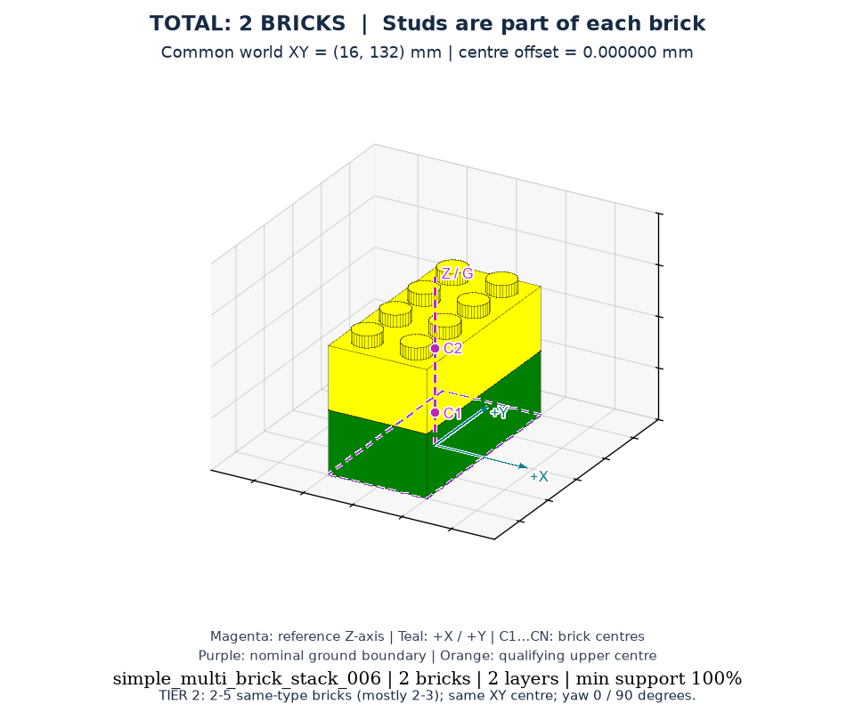
2 块 · seed 1005 · 2 层
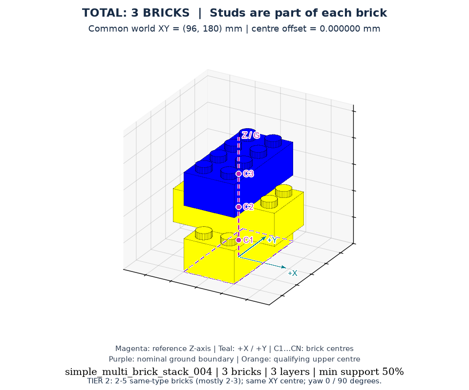
3 块 · seed 1003 · 3 层
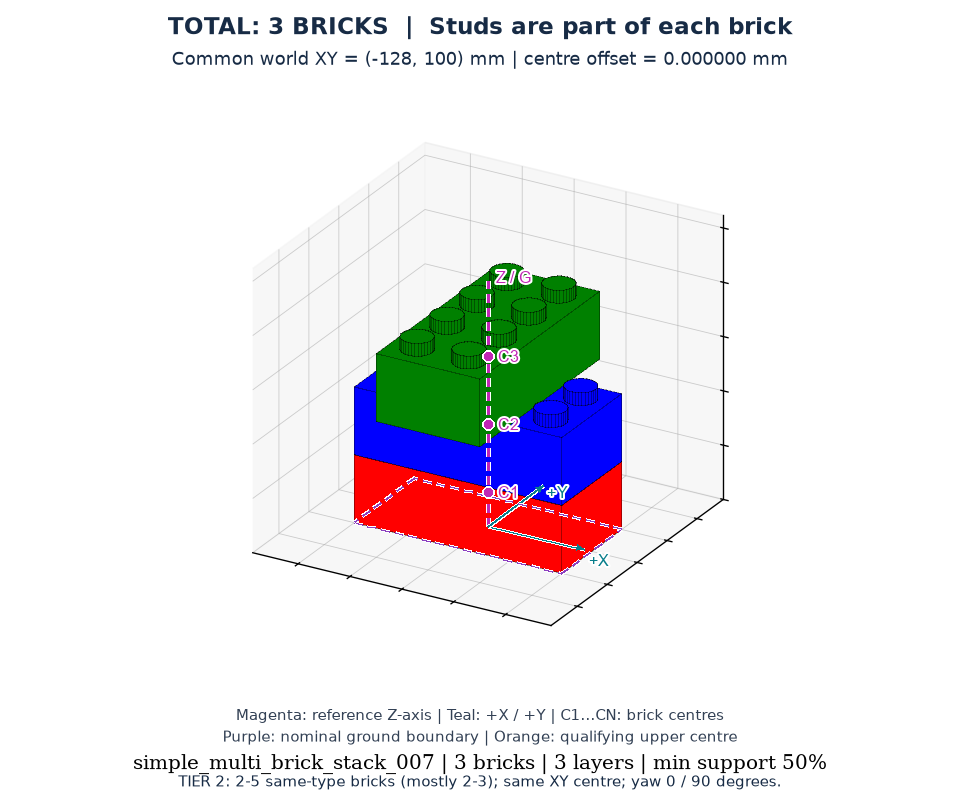
3 块 · seed 1006 · 3 层
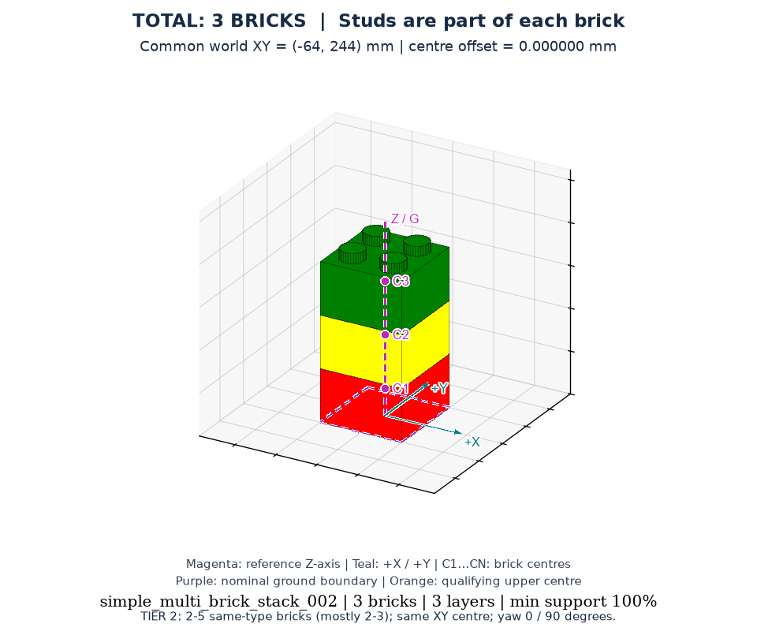
3 块 · seed 1001 · 3 层
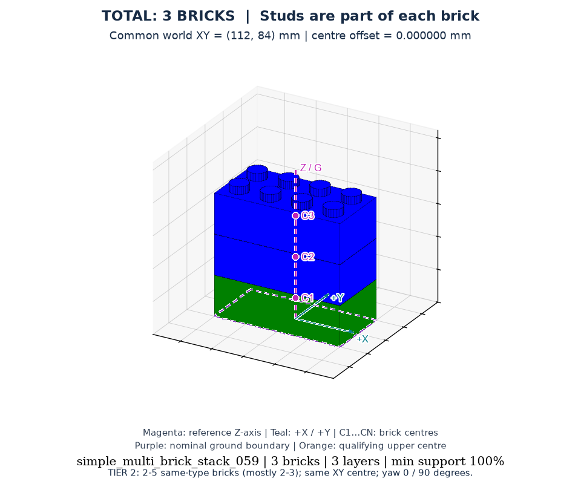
3 块 · seed 1058 · 3 层
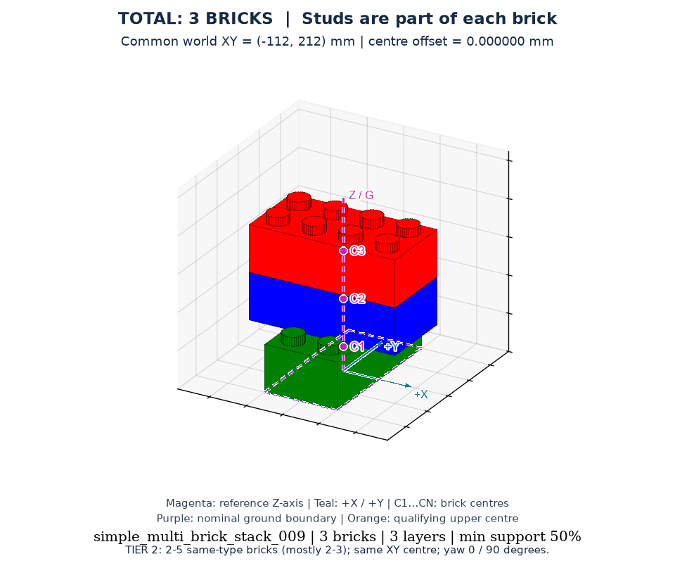
3 块 · seed 1008 · 3 层
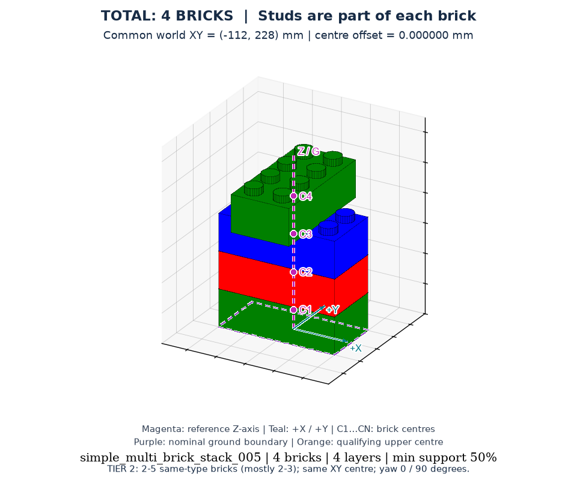
4 块 · seed 1004 · 4 层
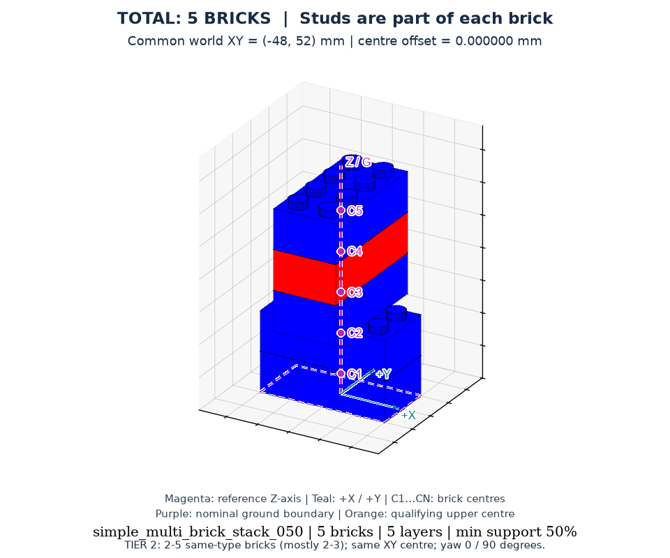
5 块 · seed 1049 · 5 层